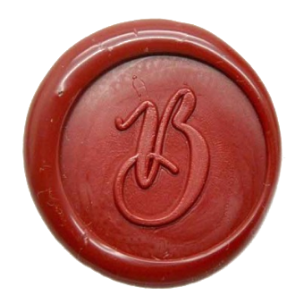
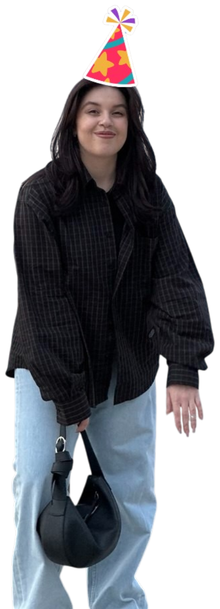

Анекдот от Соньки
{{ joke }}
{{ guestGreeting }}
Ни красок, ни матрёшек, ни торта. Пиво, а остальное пошло в пизду!
Два маленьких вопроса, чтобы все прошло великолепно!
Где встречаемся. Можно отметить несколько.
Что брать именно тебе. Можно отметить несколько.

Я в курсе. Пиво за мной.
Нажми — и я буду знать, что ты придёшь.
